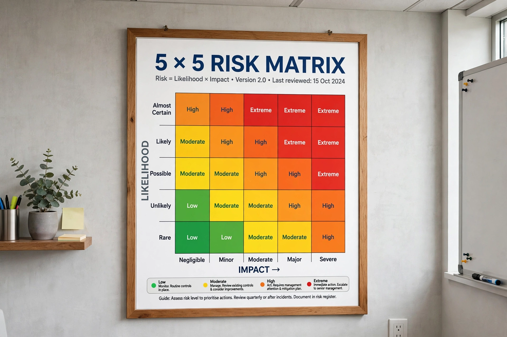

Risk assessment

Risk assessment is the combined effort of identifying and analysing potential events that may negatively impact individuals, assets, or the environment (risk analysis), and making judgements about the tolerability of the risk in light of influencing factors (risk evaluation). It forms a central part of risk management in fields including occupational health and safety, finance, engineering, environmental protection, and public health.
1 Definitions
2 Steps
3 Types
4 Quantitative and qualitative assessment
5 Criticism
Definitions
A hazard is a source of potential harm; risk is the combination of the probability of an event and the severity of its consequences. Risk assessment aims to answer three questions: what can go wrong, how likely is it, and what are the consequences?
Steps
Typical steps include hazard identification, characterisation of exposure or vulnerability, estimation of probability and impact, comparison against risk criteria, and selection of controls. In workplace safety, common methods include checklists, job safety analysis, HAZOP studies, failure mode and effects analysis (FMEA), and fault-tree and event-tree analysis.
Types
- Health risk assessment – quantifies risks from chemical, biological, or physical agents, classically in four steps: hazard identification, dose–response assessment, exposure assessment, and risk characterisation.
- Environmental risk assessment – evaluates effects of stressors on ecosystems.
- Financial risk assessment – evaluates credit, market, and operational risks, often using value at risk.
- Project and engineering risk assessment – identifies threats to schedules, budgets, and system safety.
Quantitative and qualitative assessment
Qualitative assessments rank risks using descriptive scales, often plotted on a risk matrix. Quantitative assessments assign numerical probabilities and consequences, sometimes using Monte Carlo simulation, and express risk in units such as individual risk of death per year or expected loss.
Criticism
Risk assessments can be criticised for false precision, dependence on assumptions, neglect of rare high-impact ("black swan") events, and subjective judgements disguised as objective analysis. Risk perception research shows that expert and public judgements of risk often diverge.